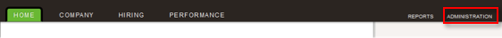

Sign in to TribeHR. If you do not have an account, you can create a trial account.
Select Administration, as shown below.


Select the SAML tab, as shown above.
Enter the following Identity Provider Login URL, as shown above.
Sign in to the Okta Admin app to generate this variable.Cut and paste the following Identity Provider Certificate, as shown above.
Sign in to the Okta Admin app to generate this variable.
Select Save SAML Setup, as shown above.